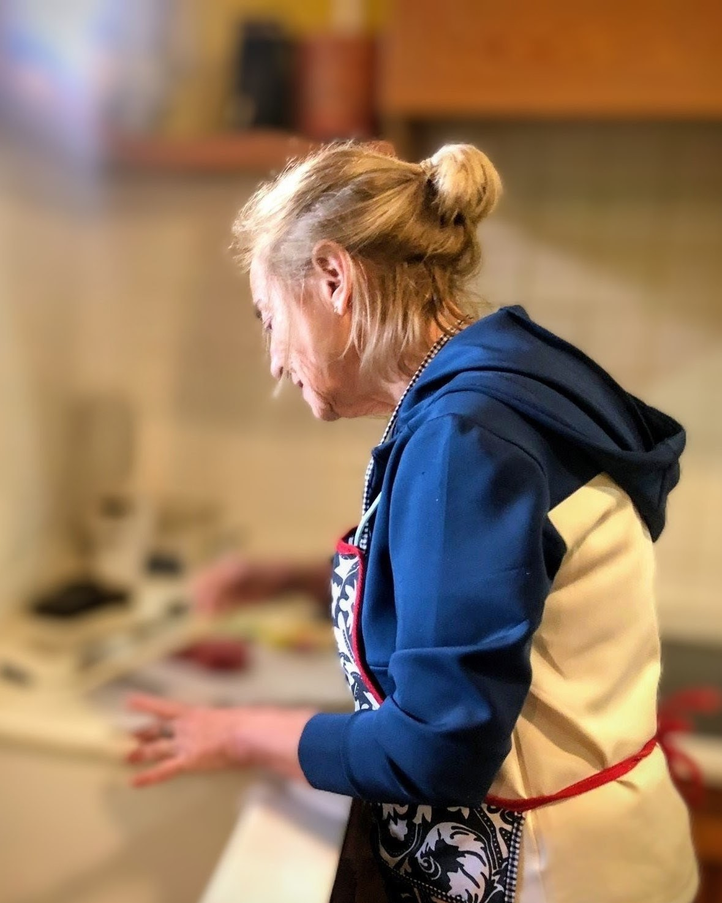
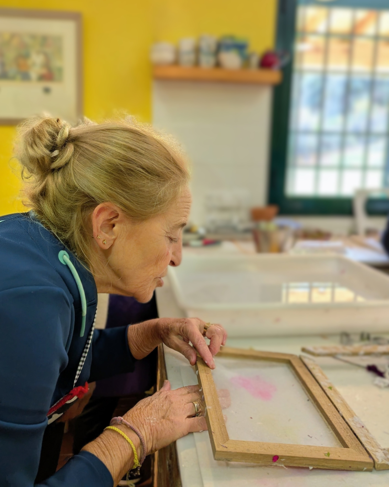
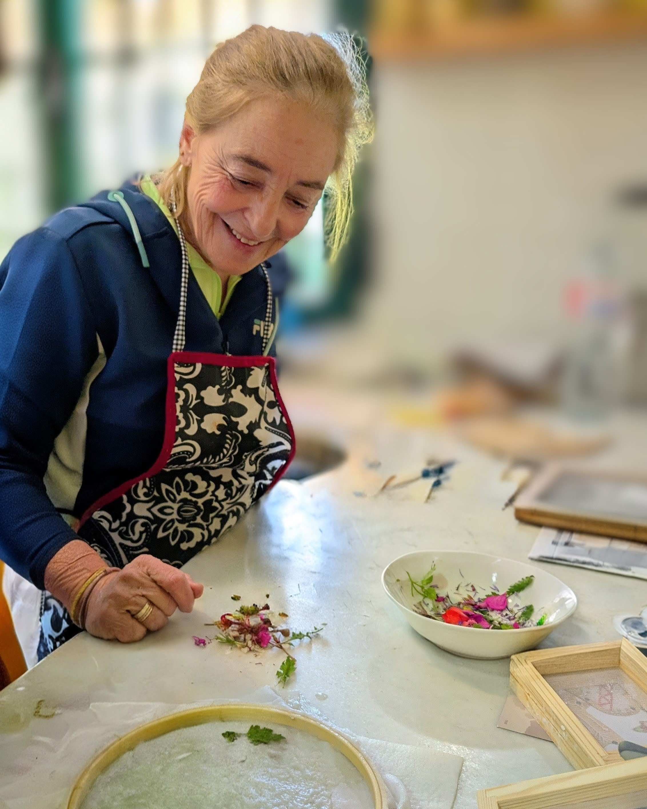

Mi historia
El origen de Un Prado Blanco
Desde muy pequeña, Belén Carretero encontró en el dibujo una forma de entender el mundo. Las hojas en blanco eran refugio, juego y lenguaje. Creció rodeada de colores, cuadernos y silencios creativos que, con el tiempo, se convirtieron en vocación.

Estudió Bellas Artes movida por la necesidad de profundizar en la pintura, la composición y el lenguaje visual. Durante esos años descubrió que no solo le interesaba crear imágenes, sino también el proceso.

Tras finalizar sus estudios, decidió ampliar su formación con un máster en Artesanía. Allí nació un vínculo profundo con los oficios tradicionales y el trabajo manual.

Poco a poco, su pintura fue encontrando un nuevo hogar en la papelería. Invitaciones, sobres, papeles y tintas se transformaron en pequeños lienzos cargados de significado.
Hoy, Belén se dedica a la creación de papelería artesanal y personalizada, especialmente para bodas y celebraciones. Esta es una historia que sigue escribiéndose despacio, hoja a hoja.